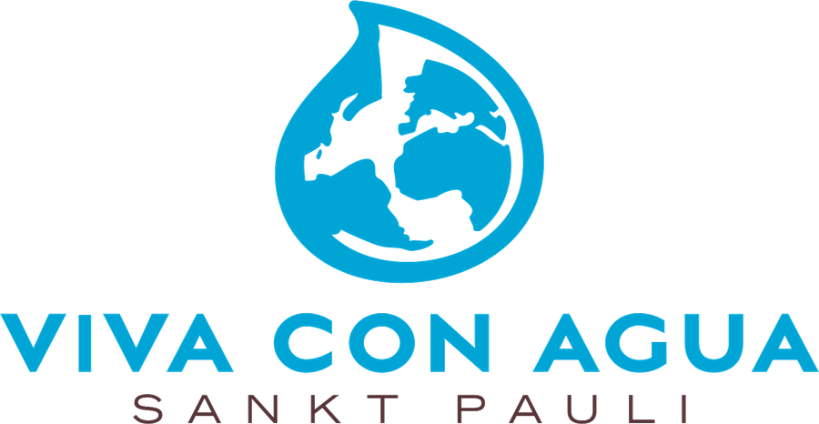
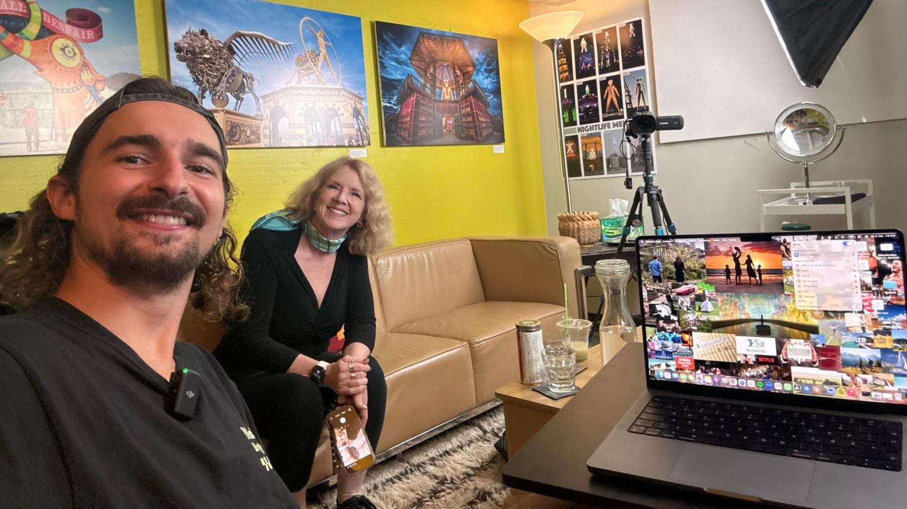
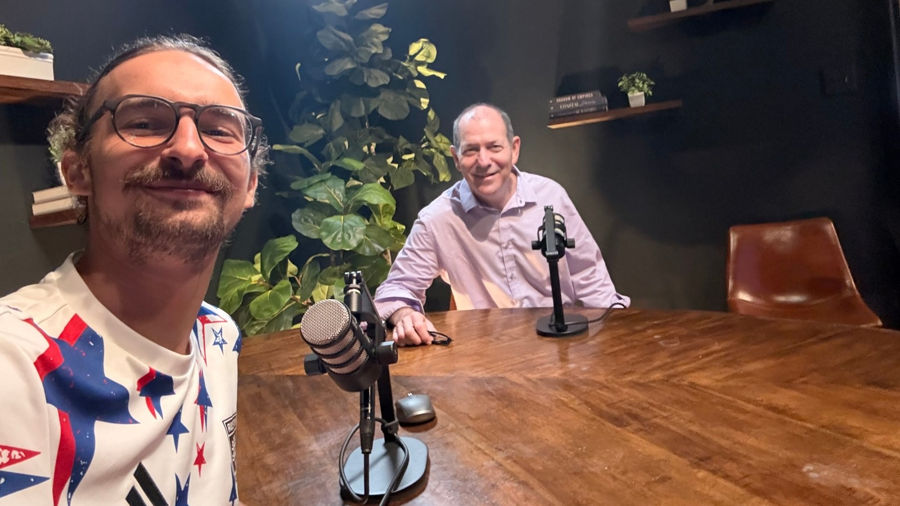
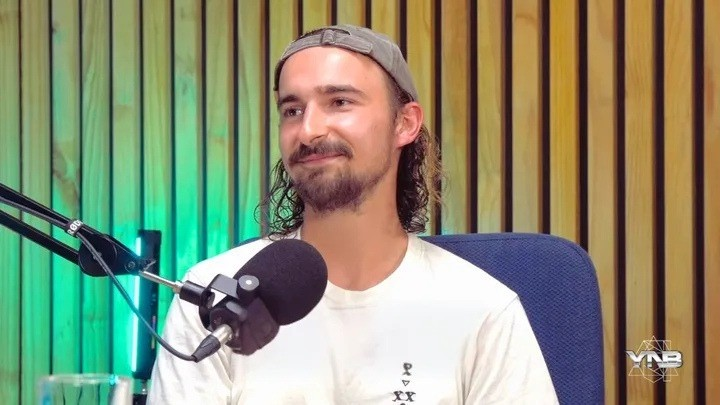
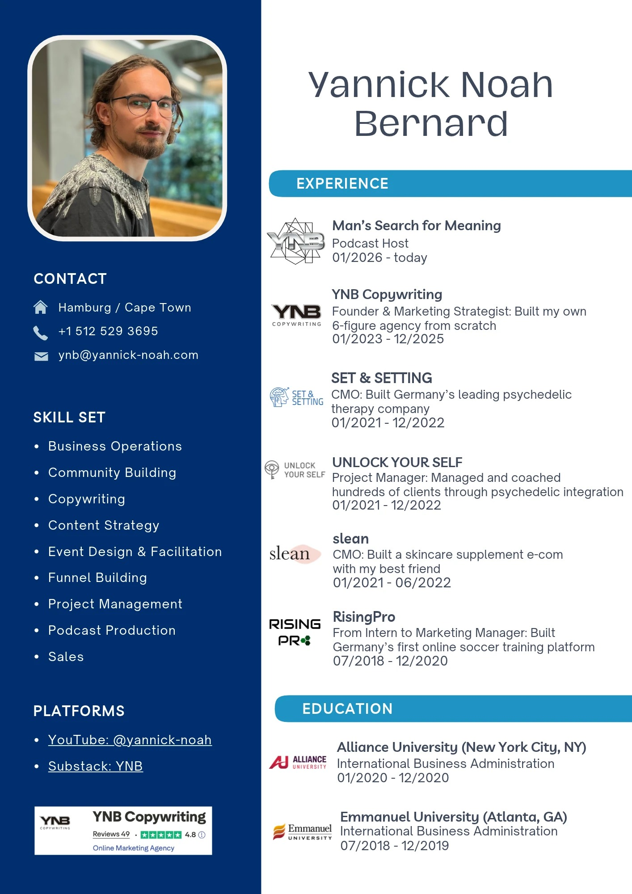

AfrikaBurn, Sabbatical, VivaConAgua
Kapstadt, 19. November 2026 – Yannick N. Bernard, 28, bewirbt sich auf die ausgeschriebene Position des Senior PR Managers bei Viva con Agua de Sankt Pauli e. V. Die Bewerbung liegt als Pressemitteilung vor.
„Auf dem Burn begriff ich, dass ich seit Jahren Geschichten erzähle, an die ich selbst nicht mehr glaube…
Dabei hatte ich auf dem Papier vermeintlich alles richtig gemacht: Sieben Jahre lang hab ich das Marketing-Game gespielt. Sechsstellige Copywriting-Agentur. 100+ zufriedene Kunden.
Aber innerlich: leer.“
Yannick N. BernardDrei Tage nach seiner Rückkehr vom AfrikaBurn schloss Bernard seine Agentur, zog nach Kapstadt und ging in ein einjähriges Sabbatical. Währenddessen baute er seinen eigenen Podcast auf: Man’s Search for Meaning, benannt nach Viktor Frankls Buch, über Menschen, die durchs Feuer gegangen sind. Aufgenommen wird ausschließlich in Person. Zu Gast waren bisher u. a.
Um diese Gäste zu gewinnen, schrieb Bernard über 400 Kaltakquise-Mails (!) und flog für drei Monate in die USA.


Bernard ist zwar kein klassischer Pressesprecher. Die Kompetenzen, die Viva con Agua sucht, übt er aber seit sieben Jahren branchenübergreifend aus. Er hat Startups zu Marktführern etabliert, globale Communities aufgebaut und (Personen)Marken wie Ungeskriptet, Veit Lindau und Greator positioniert. Der Kern seiner Medienarbeit: zu erkennen, welche Geschichte in einer Sache steckt, ihr eine Form zu geben und den Ort zu finden, an dem sie ankommt. Presse- und PR-Texte, Interviews und Storytelling-Formate sind sein Handwerk; beim Podcast übernimmt er Recherche, Interview, Redaktion und die gesamte Medienarbeit selbst.
„Nach meinem Sabbatical will ich nicht noch ein Business skalieren. Ich will meine Erfahrung nur noch für etwas einsetzen, hinter dem ich menschlich zu 100% stehe.“
Yannick N. Bernard
Yannick N. Bernard, geboren 1998, ist Marketingstratege, Texter und Host des Interview-Podcasts Man’s Search for Meaning. In seiner siebenjährigen Selbständigkeit führte er eine eigene Copywriting-Agentur, arbeitete als strategische rechte Hand direkt an der Seite von Gründern und baute unter anderem Deutschlands führendes Unternehmen für psychedelische Therapie mit auf. Er hat 35 Länder bereist und in New York, Medellín, Berlin, Bali und Kapstadt gelebt. Seit 2022 veranstaltet er Retreats, Masterminds und Workations in Asien, Afrika und Europa.
